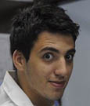
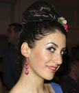
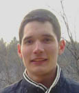
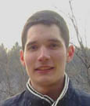
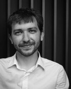
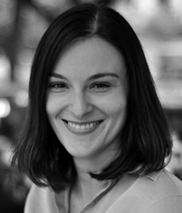

S3++ Požega 2014 (12.-22. srpnja): PROGRAM
PROJEKTI
- Istraživanje arhitekture genoma pomoću sekvenciranja nove generacije
- Osvjetljavanje fraktala
- Ciljanje stanica raka koristeći funkcionalizirane nanočestice
- Ljudska mikrobiota: prijatelji ili neprijatelji?
RADIONICE
PREDAVANJA
PROJEKTI
Istraživanje arhitekture genoma pomoću sekvenciranja nove generacije
 Jedno od pionirskih otkrića unutar područja molekularne biologije bilo je otkriće genetskog koda jer DNA svakog organizma skriva važne informacije koje ne određuju samo njegovu budućnost, već i otkrivaju njegovu evolucijsku prošlost. U današnje vrijeme, brz razvitak sekvenciranja nove generacije dovodi do mnoštva novih primjena u biologiji i medicini. Primjerice, moguće je sekvencirati nekoliko ljudskih genoma unutar nekoliko dana. Sekvenciranje čitavog genoma mnogih srodnih organizama omogućilo je komparativna i evolucijska istraživanja velikih razmjera koja su prije samo nekoliko godina bila nezamisliva. Tehnologija sekvenciranja nove generacije donijela je informacije koje su bile izvan dosega tradicionalne tehnologije DNA sekvenciranja. Tako je otkriveno i da su varijacije unutar strukture genoma, poput varijacija u broju kopija i inverzija DNA sekvence, jedan od glavnih pokretača ljudske evolucije i izvora varijacija unutar fenotipa.
Jedno od pionirskih otkrića unutar područja molekularne biologije bilo je otkriće genetskog koda jer DNA svakog organizma skriva važne informacije koje ne određuju samo njegovu budućnost, već i otkrivaju njegovu evolucijsku prošlost. U današnje vrijeme, brz razvitak sekvenciranja nove generacije dovodi do mnoštva novih primjena u biologiji i medicini. Primjerice, moguće je sekvencirati nekoliko ljudskih genoma unutar nekoliko dana. Sekvenciranje čitavog genoma mnogih srodnih organizama omogućilo je komparativna i evolucijska istraživanja velikih razmjera koja su prije samo nekoliko godina bila nezamisliva. Tehnologija sekvenciranja nove generacije donijela je informacije koje su bile izvan dosega tradicionalne tehnologije DNA sekvenciranja. Tako je otkriveno i da su varijacije unutar strukture genoma, poput varijacija u broju kopija i inverzija DNA sekvence, jedan od glavnih pokretača ljudske evolucije i izvora varijacija unutar fenotipa.
 Matilda Maleš
Matilda MalešEMBL Heidelberg, Njemačka
Matilda je završila preddiplomski studij molekularne biologije na Sveučilistu u Zagrebu, nakon čega je završila diplomski studij na Sveučilistu u Heidelbergu u Njemačkoj. Trenutno izrađuje svoj doktorat na temu genomike na EMBL-u u Heidelbergu, gdje je posebno zanima uloga nekodirajućeg genoma u procesu razvitka embrija. Kad ne radi, možete ju pronaći na satu swing plesa, joge ili kako se odmara čitajući dobru knjigu. Matilda sudjeluje u Ljetnoj školi znanosti od 2006, dva puta kao srednjoškolka te kasnije dva puta kao voditeljica swapshop radionice.
 Jelena Tica
Jelena TicaEMBL Heidelberg, Njemačka
Jelena trenutno izrađuje doktorat iz molekularne biologije na EMBL-u u Heidelbergu te ju posebno zanimaju strukturalne varijacije, genomika raka i evolucija genoma. Prije odlaska u Njemačku, Jelena je završila preddiplomski i diplomski studij molekularne biologije na Sveučilištu u Zagrebu. U slobodno vrijeme Jelena voli čitati knjige, gledati filmove i igrati računalne igrice. Ide u teretanu, uči njemački te piše beauty blog.
Osvjetljavanje fraktala
Budući da živimo u trodimenzionalnom svijetu, razumijemo što su trodimenzionalni predmeti (na primjer kugla). Također lako možemo razumjeti pojam dvodimenzionalnih (krug), pa čak i jednodimenionalnih objekata (linija), no ima li smisla govoriti o necjelobrojnim dimenzijama, poput 2.65 ili 1.3? Pokazalo se da ima; takvi objekti se nazivaju fraktalima. Lako ih možemo naći u prirodi ako znamo gdje tražiti. Mnogi fizikalni procesi, poput difuzije, agregacije i električnog izboja, rezultiraju fraktalima. Analizom tako nastale strukture možemo razlučiti detalje mikroskopskih procesa kojima struktura nastaje.
Tijekom ovog projekta istražit ćemo svojstva fraktala koji proizlaze iz agregacije koloidnih čestica, primjenom tehnika raspršenja svjetla, koje se koriste u mnogim modernim eksperimentima. Polaznici će dizajnirati i izraditi mjerni postav, napisati potrebne računalne programe i provesti numeričku simulaciju procesa agregacije. Usporedbom eksperimenta i rezultata simulacija steći će uvid u mikroskopske procese koji upravljaju rastom konkretnih fraktalnih objekata.

Marija Došlić
Prirodoslovno-matematički fakultet, Zagreb
Marija je studentica fizike na Prirodoslovno-matematičkom fakultetu Sveučilišta u Zagrebu, gdje trenutno izrađuje svoj diplomski rad u području visokotemperaturnih supravodiča. Sudjelovala je na srednjoškolskim natjecanjima kao učenica i kao mentorica. U svoje slobodno vrijeme voli čitati novine (sve), kukičati, putovati i planinariti s prijateljima.

Veronika Sunko
Prirodoslovno-matematički fakultet, Zagreb
Veronika je studentica fizike na Prirodoslovno-matematičkom fakultetu Sveučilišta u Zagrebu. Nedavno je radila na dinamici staklastih sustava. Trenutno radi na svojem diplomskom radu koji uključuje kompleksne magnetske sustave na Institutu za fiziku, Zagreb. Voli planinarenje, čitanje i eksperimentalno kuhanje.
Ciljanje stanica raka koristeći funkcionalizirane nanočestice
 Jedan od najvećih problema u tretmanu raka jest teško razlikovanje zdravih stanica od stanica raka. Ovaj problem otežava dizajn lijekova koji bi ubijali samo stanice raka te pritom ne bi imali utjecaj na zdrave stanice. Stanice raka prekomjerno proizvode neke membranske receptore. Membranski receptori su posebni proteini na membrani stanice koji joj omogućuju komunikaciju s vanjskim svijetom. Tijekom posljednjih nekoliko godina nova ideja temeljena na multivalentnosti nam je omogućila da precizno ciljamo samo na stanice čija je populacija receptora iznad određene granice. Multivalentna čestica je čestica koja istovremeno može ostvariti mnogo veza. Uz pomoć njih možemo dizajnirati lijek koji će se pričvrstiti isključivo na stanicu raka. Računala nam omogućavaju da testiramo i usavršimo ove ideje uz pomoć simulacija prije nego što eksperimenti s novim lijekovima započnu na pacijentima.
Jedan od najvećih problema u tretmanu raka jest teško razlikovanje zdravih stanica od stanica raka. Ovaj problem otežava dizajn lijekova koji bi ubijali samo stanice raka te pritom ne bi imali utjecaj na zdrave stanice. Stanice raka prekomjerno proizvode neke membranske receptore. Membranski receptori su posebni proteini na membrani stanice koji joj omogućuju komunikaciju s vanjskim svijetom. Tijekom posljednjih nekoliko godina nova ideja temeljena na multivalentnosti nam je omogućila da precizno ciljamo samo na stanice čija je populacija receptora iznad određene granice. Multivalentna čestica je čestica koja istovremeno može ostvariti mnogo veza. Uz pomoć njih možemo dizajnirati lijek koji će se pričvrstiti isključivo na stanicu raka. Računala nam omogućavaju da testiramo i usavršimo ove ideje uz pomoć simulacija prije nego što eksperimenti s novim lijekovima započnu na pacijentima.
U ovom projektu koristit ćemo Monte Carlo računalne simulacije kako bismo dizajnirali dobar ciljni sistem za lijekove. Usredotočit ćemo se na stanice raka. Ovaj problem je veoma interdisciplinaran i uključuje istražiti bitne koncepte iz fizike, kemije i molekularne biologije. Cilj nam je izliječiti virtualnog pacijenta dizajniranjem multivaletne nanočestice koja će se pričvrstiti isključivo za stanice raka (i pritom ih ubiti), ali ne i za normalne stanice. Dizajnirat ćemo svojstva nanočestice, definirat ćemo koliko veza može oformiti istovremeno i koja bi trebala biti doza lijeka (koliko nanočestica bi trebali dati pacijentu).

Tine Curk
Sveučilište u Cambridgeu, Velika Britanija
Tine je PhD student u području računalne kemije na Sveučilistu u Cambridgeu, Velika Britanija. Preddiplomski i diplomski studij fizike je završio na Sveučilištu u Mariboru. Tine je stručnjak u računalnom modeliranju sistema na mikroskali, poput polimera i nanočestica. Njegov glavni istraživački alat je statistička mehanika i Monte Carlo simulacije. U svoje slobodno vrijeme, Tine vesla, izrađuje kreativne sendviče i uživa u dobroj glazbi.
Ljudska mikrobiota: prijatelji ili neprijatelji?
 Naše tijelo sadrži preko tisuću različitih vrsta mikroorganizama sa složenom raspodjelom mikrobijalnih zajednica unutar specifičnih mjesta u našem tijelu. Zajednica mikroorganizama koja kolonizira ljudsko tijelo se naziva mikrobiota. Mikrobiota igra neke od ključnih uloga u metabolizmu, regulaciji imunološkog sustava te služi kao veoma bitan štit koji sprječava patogene bakterije u nastojanjima da koloniziraju naše tijelo. Ometanje mikrookoline i arhitekture kolonija koje se sastoje od različitih vrsta mikroorganizama može često omesti osjetljivu ravnotežu naše lokalne mikrobiote što može dovesti do štetnih posljedica ili čak i bolesti. Takva neravnoteža u mikrobioti je povezana s mnogim poremećajima poput autoimunih bolesti, ekcema i psorijaze.
Naše tijelo sadrži preko tisuću različitih vrsta mikroorganizama sa složenom raspodjelom mikrobijalnih zajednica unutar specifičnih mjesta u našem tijelu. Zajednica mikroorganizama koja kolonizira ljudsko tijelo se naziva mikrobiota. Mikrobiota igra neke od ključnih uloga u metabolizmu, regulaciji imunološkog sustava te služi kao veoma bitan štit koji sprječava patogene bakterije u nastojanjima da koloniziraju naše tijelo. Ometanje mikrookoline i arhitekture kolonija koje se sastoje od različitih vrsta mikroorganizama može često omesti osjetljivu ravnotežu naše lokalne mikrobiote što može dovesti do štetnih posljedica ili čak i bolesti. Takva neravnoteža u mikrobioti je povezana s mnogim poremećajima poput autoimunih bolesti, ekcema i psorijaze.

Marta Figueiredo
Sveučilište u Zurichu, Švicarska
Marta je završila svoj diplomski studij farmaceutskih znanosti na Sveučilištu u Portu, Portugal. Tijekom rada kao farmaceut, falilo joj je uzbuđenje koje se javlja prilikom procesa učenja, te se stoga odlučila vratiti u akademski svijet. Trenutno izrađuje doktorat na temu fiziologije bubrega. Osim znanosti, uživa u aktivnostima na otvorenom i upoznavanju novih ljudi.
Teambuilding radionica: "Connectability"
 Dio je ljudske prirode povezati se i biti povezan, u kontaktu. Kako bi se stvorila povezanost s drugom osobom ili grupom trebamo biti otvoreni, iskreni i spremni na istraživanje. Kao rezultat iz kvalitetne povezanosti rađa se razumijevanje i zajednička sposobnost kreacije. To je trenutak kada cjelina uistinu postaje veća od sume dijelova. It tog razloga ćemo posvetiti ovu radionicu stvaranju povezanosti, i to na aktivan i prijateljski način s puno zabave.
Dio je ljudske prirode povezati se i biti povezan, u kontaktu. Kako bi se stvorila povezanost s drugom osobom ili grupom trebamo biti otvoreni, iskreni i spremni na istraživanje. Kao rezultat iz kvalitetne povezanosti rađa se razumijevanje i zajednička sposobnost kreacije. To je trenutak kada cjelina uistinu postaje veća od sume dijelova. It tog razloga ćemo posvetiti ovu radionicu stvaranju povezanosti, i to na aktivan i prijateljski način s puno zabave.

Voditeljica radionice: Ivana Štulić (The Generali Group, Zagreb)
Research Swapshop
Roboti! Paljba!
Vještine programiranja su neprocjenjive u gotovo svakom području današnjeg istraživanja kako količina dostupnih podataka i očekivana brzina napretka rastu eksponencijalno. Od biologije i neuroznanosti, do društvenih znansoti i ekonomije, mogućnost razvitka vlastitih programa i testiranja vlastitih ideja je jako brzo postala ključna vještina, jedna koja je često zanemarena izvan računalnih znanosti. Cilj ove radionice je predstaviti programiranje iz drukčijeg kuta, onog mnogo interaktivnijeg i zabavnijeg. Učenici će biti ohrabreni da sami osmisle ideju za njihovu vlastitu borbenu arenu umjetne inteligencije koju će zajednički isprogramirati.

Voditelj radionice:
Ivo Sluganović (Sveučilište Oxford, Velika Britanija)
Kemijska ljepota boja
Jeste li se ikad zapitali zašto je jesen tako predivna? Naša percepcija svijeta definirana je bojama koje vidimo. Ako počnete razmišljati o tome, nekoliko pitanja odmah izbije na površinu. Zašto vidimo boje? Što označava boju? Kako priroda iskorištava šarene spojeve? Pokušat ćemo zagrepsti površinu i raspraviti nekoliko tema unutar ovog područja. Istražit ćemo kemijsko i elektronsko podrijetlo boja. Vidjet ćemo kako neki spojevi mijenjaju boju u različitim okolinama te ćemo iskoristiti to svojstvo kako bismo odredili pH nekih kućanskih tekućina. Vidjet ćemo da je ljubičasta boja kombinacija plave i crvene razdjelivši ih uz pomoć kromatografije. Na kraju ćemo zapaliti malo soli i vidjeti što će se dogoditi te objasniti kako funkcionira vatromet!

Voditelj radionice:
Aleksandar Salim (EPFL Lausanne, Švicarska)
Idemo skuhati jaje!
Jeste li se ikada zapitali kao svijet izgleda iz perspektive proteina? U ovoj radionici koristit ćemo proteine cijanobakterije kako bismo objasnili pojmove stabilnosti, smatanja i razmatanja proteina. Ove bakterije uz molekule klorofila sadrže složen kompleks za sakupljanje svjetla. Kromofor nas izvještava o cjelovitosti strukture proteina. Kad je u svojoj nativnoj formi, protein ima predivnu tamnoplavu boju. Kad je razmotan, plava boja nestane. Jednostavno rečeno, koristit ćemo ovaj jednostavan sustav kako bismo proučili procese smatanja i razmatanja proteina. Pokušat ćemo napraviti i objasniti proces kuhanja jaja. Ovaj pristup ćemo nadopuniti s popularnom internetskom igrom "Fold it" gdje će učenici dobiti uvid u strukturu proteina te kako okolina utječe na nju.

Voditeljica radionice:
Aleksandra Vančevska (EPFL Lausanne, Švicarska)
Kako uz pomoć matematike spriječiti epidemiju?
Matematičko modeliranje je primjena matematike u svrhu opisivanja stvarnih fenomena, istraživanja važnih pitanja o promatranom svijetu, ispitivanja ideja i predviđanja. Umjesto provođenja pravog eksperimenta, matematičar provodi eksperiment i simulacije na temelju matematičke reprezentacije stvarnog svijeta. Ovo je vrlo moćno oruđe za testiranje vaših hipoteza i predviđanje budućih ponašanja. Vjerojatno je baš zato toliko rašireno i korišteno ne samo u prirodnim znanostima i inženjerstvu već i u društvenim znanostima i ekonomiji. Učenici će naučiti osnove matematičkog modeliranja u biologiji. Napravit će model rasta populacije, usporediti ga sa stvarnim podatcima, razmislit će o nedostatcima modela, objasniti devijacije i pokušati ga unaprijediti. Također će napraviti modele širenja infektivnih bolesti..

Voditelj radionice:
Gabriela Clara Racz (Sveučilište u Zagrebu, Hrvatska)
Zbog čega mislimo da je svjetlost val?
Svjetlost je i čestica i val. Svrha ove radionice je demonstrirati valnu prirodu svjetlosti i upoznati polaznike s metodama koje se koriste u istraživanju prirodnih fenomena. Svjetlost je elektromagnetski val. Njegovi sastavni dijelovi, električna i magnetska polja, vibriraju. Ona nasljeđuju svojstva mehaničkih valova poput difrakcije i disperzije. Difrakcija se odnosi na razne pojave koje se javljaju kada je val naiđe na prepreku ili prorez. Disperzija, s druge strane, je pojava u kojoj fazna brzina vala ovisi o frekfenciji ili alternativno, grupna brzina ovisi o frekvenciji. Te su pojave uzrok pojave svijetlih i tamnih pruga na pozadini i rasap bijele svjetlosti u duginim bojama. Ovaj swapshop je zamišljen kao kombinacija predavanja i eksperimenata u kojima će učenici imati priliku saznati više o spomenutim pojavama.
 

Voditelji radionice:
Tea Mužić (Sveučilište u Copenhagenu, Danska) & Ivan Pribanić (Sveučilište u Rijeci, Hrvatska)
RASPORED PREDAVANJA
13. srpnja 2014.
Ivan Đikić (Goethe Sveučilište, Njemačka): Granica je jedino u nama samima
14. srpnja 2014.
Ivan Dokmanić (EPFL Lausanne, Švicarska): “Slušanje” oblika sobe, i druge poslastice s odjecima
16. srpnja 2014.
Ivan Halasz (Institut Ruđer Bošković, Hrvatska): Učinkovite, selektivne i ekološke kemijske reakcije bez otapala
17. srpnja 2014.
Sir R. Timothy Hunt (London Research Institute, Velika Britanija), Nobelova nagrada iz fiziologije i medicine 2001: TBA
18. srpnja 2014.
Tibor Pakoždi (EMBL Heidelberg, Njemačka): Regulatorni krajolik genoma
19. srpnja 2014.
Okrugli stol: “Zašto društvo treba znanstvenike?”
20. srpnja 2014.
Vernesa Smolčić (PMF, Sveučilište u Zagrebu, Hrvatska): Razvoj galaksija kroz povijest svemira
O PREDAVAČIMA
 Ivan Đikić trenutno je ravnatelj Buchman instituta za molekularne bioznanosti i Instituta za biokemiju na Goethe Sveučilištu u Frankfurtu, Njemačka. Njegovi znanstveni interesi su fokusirani na proučavanje ubikvitina, malog proteina koji je kovalentno vezan za tisuće proteina unutar stanice te time regulira mnoštvo staničnih procesa. Njegova nedavna priznanja i nagrade uključuju prestižnu Leibniz nagradu, Jung nagradu za medicinu i William Rose nagradu u 2013. Član je njemačke akademije znanosti Leopoldina i Europske organizacije za molekularnu biologiju (EMBO).
Ivan Đikić trenutno je ravnatelj Buchman instituta za molekularne bioznanosti i Instituta za biokemiju na Goethe Sveučilištu u Frankfurtu, Njemačka. Njegovi znanstveni interesi su fokusirani na proučavanje ubikvitina, malog proteina koji je kovalentno vezan za tisuće proteina unutar stanice te time regulira mnoštvo staničnih procesa. Njegova nedavna priznanja i nagrade uključuju prestižnu Leibniz nagradu, Jung nagradu za medicinu i William Rose nagradu u 2013. Član je njemačke akademije znanosti Leopoldina i Europske organizacije za molekularnu biologiju (EMBO).
 Ivan Dokmanić trenutno završava doktorat iz obrade signala i akustike na Ecole Polytechnique Fédérale de Lausanne u Švicarskoj. Diplomirao je na Fakultetu elektrotehnike i računarstva u Zagrebu 2007. godine. Od 2007. do 2010. je bio asistent na istom fakultetu, a u međuvremenu je radio za MainConcept iz Aachena i Little Endian iz Zagreba na video kodiranju i zvučnim efektima. Istraživački interesi su mu akustika, digitalna obrada zvuka, te razvoj fundamentalnih metoda u obradi signala.
Ivan Dokmanić trenutno završava doktorat iz obrade signala i akustike na Ecole Polytechnique Fédérale de Lausanne u Švicarskoj. Diplomirao je na Fakultetu elektrotehnike i računarstva u Zagrebu 2007. godine. Od 2007. do 2010. je bio asistent na istom fakultetu, a u međuvremenu je radio za MainConcept iz Aachena i Little Endian iz Zagreba na video kodiranju i zvučnim efektima. Istraživački interesi su mu akustika, digitalna obrada zvuka, te razvoj fundamentalnih metoda u obradi signala.
Ivan Halasz rođen je u Zagrebu. Diplomirao je kemiju na Prirodoslovno-matematičkom fakultetu (PMF) u Zagrebu gdje je obranio i doktorsku disertaciju iz područja organske kemije čvrstog stanja. Proveo je dvije godine na Max-Planck-Institute for Solid State Research u Stuttgartu na post-doktorskom usavšravanju. Od 2012. zaposlen je kao znanstveni suradnik na Institutu Ruđer Bošković u Zagrebu. Bavi se kemijom čvrstog stanja s naglaskom na mehanokemijske reakcije. Objavio je niz publikacija u najuglednijim kemijskim časopisima među kojima su i prestižni časopisi Nature Chemistry te Angewandte Chemie.
 Sir Richard Timothy Hunt 2001. godine dobio je Nobelovu nagradu za fiziologiju i medicinu zajedno s Paul Nurseom i Leland H. Hartwellom za otkriće proteina koji reguliraju diobu stanica. Studirao je prirodne znanosti na Clare Collegeu u Cambridgeu. 1968 završio je doktorat naslovljen "Sinteza hemoglobina" na biokemijskom odsjeku također u Cambridgeu. 2006. je dobio prestižnu kraljevsku medalju ("Royal Medal") za 'otkriće ključnog aspekta kontrole stanične diobe, protein ciklin koji je komponenta ciklin-ovisnih kinaza'. Kraljica ga je proglasila vitezom iste godine. Više o Sir Tim Huntu možete pročitati ovdje.
Sir Richard Timothy Hunt 2001. godine dobio je Nobelovu nagradu za fiziologiju i medicinu zajedno s Paul Nurseom i Leland H. Hartwellom za otkriće proteina koji reguliraju diobu stanica. Studirao je prirodne znanosti na Clare Collegeu u Cambridgeu. 1968 završio je doktorat naslovljen "Sinteza hemoglobina" na biokemijskom odsjeku također u Cambridgeu. 2006. je dobio prestižnu kraljevsku medalju ("Royal Medal") za 'otkriće ključnog aspekta kontrole stanične diobe, protein ciklin koji je komponenta ciklin-ovisnih kinaza'. Kraljica ga je proglasila vitezom iste godine. Više o Sir Tim Huntu možete pročitati ovdje.
 Tibor Pakoždi trenutno je doktorski student na European Molecular Biology Laboratory (EMBL) u Heidelbergu u Njemačkoj. Diplomirao je u području bioinformatike i računalne biologije na Jacobs University Bremen, nakon čega se priključio Furlong grupi na EMBLu radeći na regulatornoj genomici. Često je bio uključen u rad Ljetne škole znanosti, prvotno kao student, a kasnije kao predavač iz računalne znanosti i genomike.
Tibor Pakoždi trenutno je doktorski student na European Molecular Biology Laboratory (EMBL) u Heidelbergu u Njemačkoj. Diplomirao je u području bioinformatike i računalne biologije na Jacobs University Bremen, nakon čega se priključio Furlong grupi na EMBLu radeći na regulatornoj genomici. Često je bio uključen u rad Ljetne škole znanosti, prvotno kao student, a kasnije kao predavač iz računalne znanosti i genomike.
Vernesa Smolčić je trenutno docentica na Fizičkom odsjeku Prirodoslovno-matematičkog fakulteta Sveučilišta u Zagrebu. Doktorirala je na Sveučilištu u Heidelbergu nakon čega je dvije godine bila na postdoktoratu na Caltechu (California Institute for Technology) i tri godine na Sveučilištu u Bonnu. Prva je znanstvenica u Hrvatskoj koja je dobila sredstva Europskog istraživačkog vijeća (ERC) namijenjena istraživačima početnicima za projekt “Istraživanje rasta zvjezdane mase i mase supermasivnih crnih rupa u galaksijama kroz kozmičko vrijeme: Utiranje puta za sljedeću generaciju pregleda neba”.
Copyright © 2014 Društvo za edukaciju van okvira (EVO). Sva prava pridržana.
Web dizajn: Martina Mijušković. Općeniti tekst: Branimir Lukić i Martina Mijušković. Prijevod na hrvatski: Matilda Maleš.